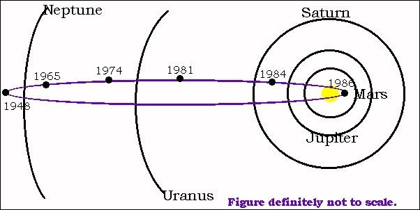

哈雷彗星簡介 哈雷彗星簡介
哈雷彗星在歷史上有記載的觀測記錄至少可以溯及西元前240年，可能可以遠至西元前1059年。
哈雷彗星的平均週期為76年，但是沒辦法簡單的計算出哈雷彗星確切再出現日期因為太陽系內大行星（如木星、土星）的重力牽引會影響到每次回歸的正確週期。最近出現在1986年；估計哈雷彗星下次回歸的時間是西元2061 年。
只有三個彗星曾經被太空船造訪過（即近距離觀測）。其中之一是哈雷彗星；1986年有五艘分別來自蘇聯、日本與歐洲的太空船造訪了哈雷彗星，歐洲太空總署的Gitto太空船更拍到了哈雷彗星核心的近照。
運轉週期

彗星繞太陽一周需要76年，屬於短週期彗星。公轉軌道是逆向的，與 太陽呈18度傾斜、離心率較大。
哈雷彗星相關影片
 |
哈雷彗星的相關紀錄
接近年份 |
出現紀錄 |
紀元前 240年 |
中國秦史皇7年有彗星紀錄，為最早紀錄的哈雷彗星，前ㄧ年5/25通過近日點 |
164年 |
羅馬時期曾紀錄「晚上看見太陽」，11/12通過近日點 |
87年 |
中國武帝後元二年7月紀錄，前ㄧ年的8/6通過近日點 |
12年 |
中國元延元年7月辛未出現彗星，前ㄧ年的10/10通過近日點 |
66年 |
中國後漢書天文誌記述，1/25通過近日點 |
141年 |
後漢書天文誌永和6年2月東方出現彗星，3/22通過近日點 |
218年 |
後漢書天文誌建安32年3月有大彗星。歐洲也觀測到，5/17通過近日點 |
295年 |
中國晉書天文誌紀錄元康5年4月出現彗星，4/20通過近日點 |
374年 |
晉書天文誌紀錄，2/16通過近日點 |
451年 |
歐洲及中國皆有紀錄，6/28通過近日點 |
530年 |
大熊座出現彗星，9/27通過近日點 |
607年 |
中國隋朝天文誌紀錄，3/15通過近日點 |
684年 |
「日本書紀」紀錄，10/2通過近日點 |
760年 |
歐洲、中國皆有紀錄，5/20通過近日點 |
837年 |
2/28通過近日點 |
912年 |
7/18通過近日點 |
989年 |
中國宗書天文誌有紀錄。日本因出現大彗星而更改年號，9/5通過近日點 |
1066年 |
3/20通過近日點 |
1145年 |
4/18通過近日點 |
1222年 |
記載白天也看的見，9/28通過近日點 |
1301年 |
10/25通過近日點 |
1378年 |
11/10通過近日點 |
1456年 |
嘗試位置觀測，1/9通過近日點 |
1531年 |
開始進行天文學觀測，哈雷用來計算軌道，8/26通過近日點 |
1607年 |
10/27通過近日點 |
1682年 |
哈雷看此時的彗星計算彗星軌道，9/15通過近日點 |
1759年 |
照哈雷預言回來的彗星，3/13通過近日點 |
1835年 |
11/16通過近日點 |
1910年 |
4/20通過近日點 |
|